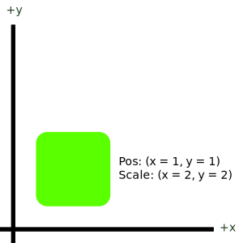
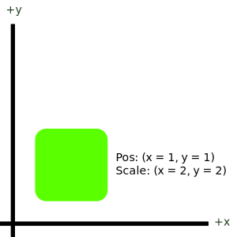
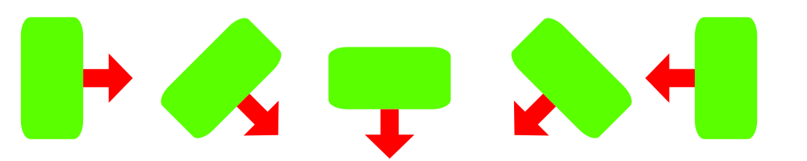

Documentation¶
The majority of features are described thoroughly through the written & generated API section, but some concepts are hard to define when restricted to classes, functions or members. This page attempts to fill in the gaps by describing the core design concepts of Tristeon in-depth.
Our goal with this page is to provide thorough transparency in how Tristeon operates and what behaviour you can expect across the board.
Transformations¶
Tristeon is a 2D game engine, meaning that objects, environment, sound, lights, and all other things are in some way located on a two-dimensional transformation grid. Tristeon, like many others, uses the cartesian coordinate system to describe an object's location, rotation, scale, movement, etc.
Position¶
Positions are points on the cartesian coordinate system. Objects can have a position and can be moved by changing the x and/or y value of their position, meaning that for example to move an object right over time, one simply needs to increase the object's x position every frame. Illustrated below is a point or position on Tristeon's 2D coordinate system:

Scale¶
Scaling in Tristeon follow the very same two-dimensional system to describe the size of an object along the x-axis and y-axis. An object's scale acts as a multiplier, meaning that if their size is originally defined by e.g. their sprite/image size, the final object's size can be calculated by multiplying the original size by its scale.
Scaling in the x-axis increases the object's size horizontally, scaling in the y-axis increases the object's size vertically. Note that scaling is local to the object, meaning that if an object is rotated 90 degrees, these effects will change accordingly (so in a 90 degree rotation situation, the x axis will actually visually scale the object vertically).
Scale affects the object from its origin point (usually the center), and only ever affects the object's size. Scale can be 0 but this makes the object non-visible. Scale can not be less than 0. An example of object scaling is illustrated below:
 

{kind=link}
Rotation¶
Rotations can turn objects clockwise or counter-clockwise. Rotations in Tristeon are described using degrees, and are applied in a clockwise direction, meaning that increasing an object's rotation will turn it in the clockwise direction (right). A rotation of 0 zero describes a neutral or identity rotation which means that the object isn't rotated and the right-pointing vector local to the object points right Vector(1, 0).
Rotations happen around the object's origin point (usually its center). The image below illustrates an object being rotated at rotation 0, 45, 90, 135, and 180 respectively (left to right). The red arrow indicates the direction of the right-pointing vector local to the object.
